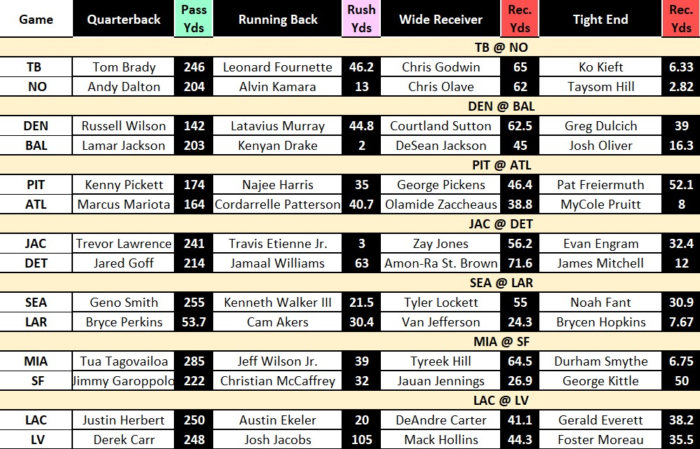

CodeName-Carter
Loading...
Golden Nuggets About Me
Hello there viewers!
My name is Tion Carter. Some people call me "T" for short. I was
born and raised here in Richmond, Virginia—originally in the heart
of the city, before moving to the suburbs nearly a decade ago. I
attended Varina High School, where I graduated 3rd in class with a
4.53 GPA. I received my B.S. in Mechanical Engineering from Virginia
Commonwealth University (VCU) just before the commencement of the
pandemic in December of 2019.
Technical Skills
- Redshift SQL
- Quicksight-Data Visualization
- Excel Visual Basics (VBA)
Soft Skills
- Attention-to-detail
- Interpersonal Communication
- Logical Analysis
Projects
NBA CheatSheet
This project was created through the use of Excel VBA. It allows sports bettors to be able to get useful NBA Player Stats that can reduce research time.
MLB Outlook
This project was also created through the use of Excel VBA. It allows sports bettors to be able to get useful MLB Player and Team stats that can give them an edge when deciding which wager to place.
NFL Helper

This project was also created through the use of Excel VBA. It allows sports bettors to be able to get useful NFL Player Stats that can help them identify potential sleepers or cost efficient options.